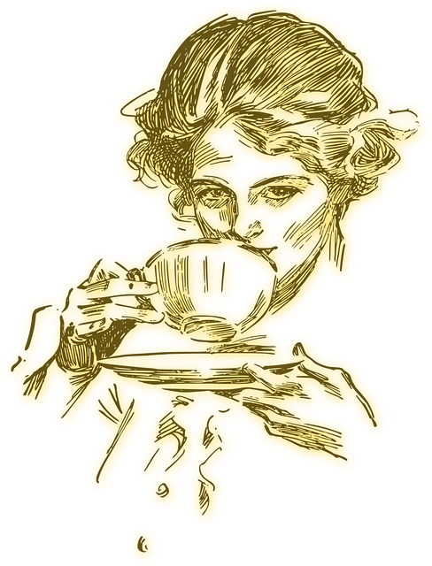
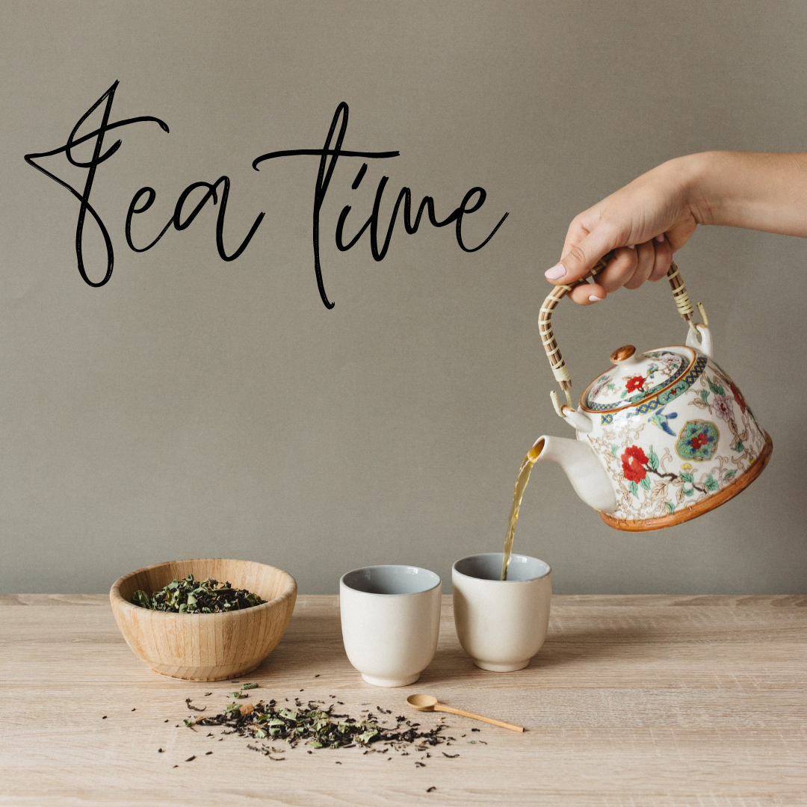
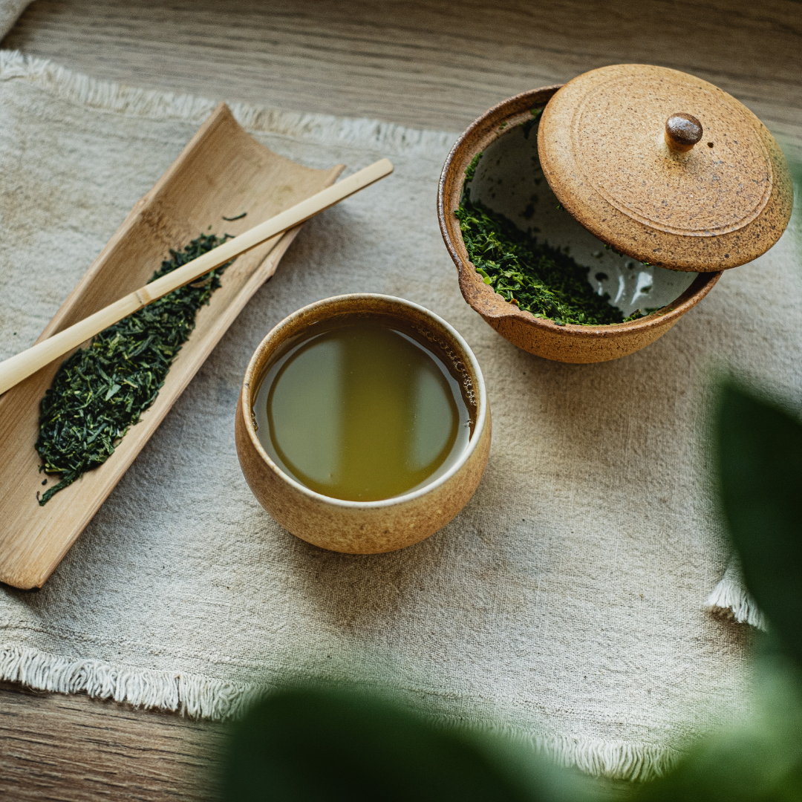
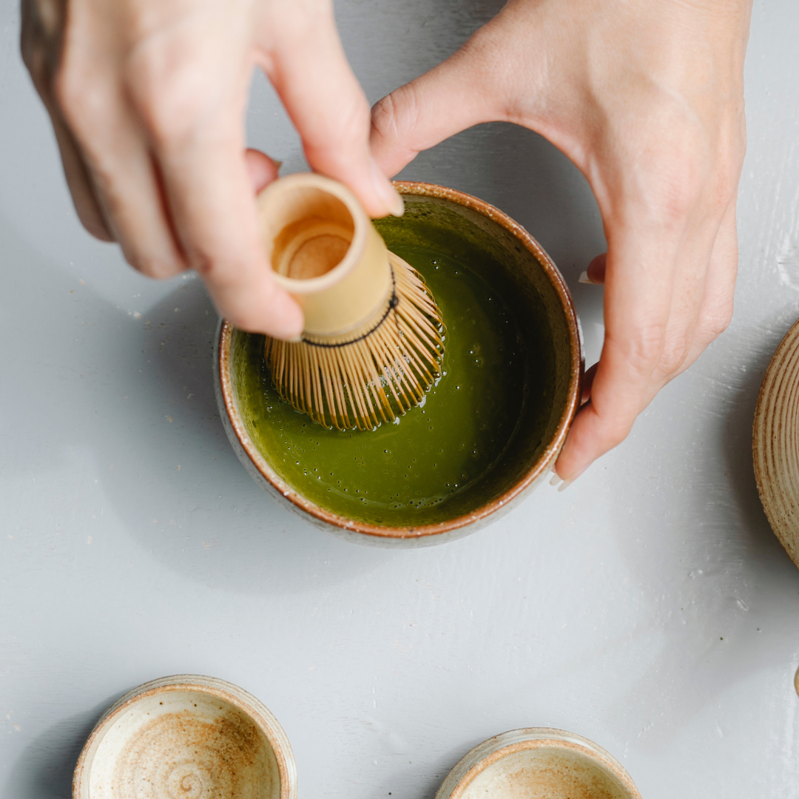
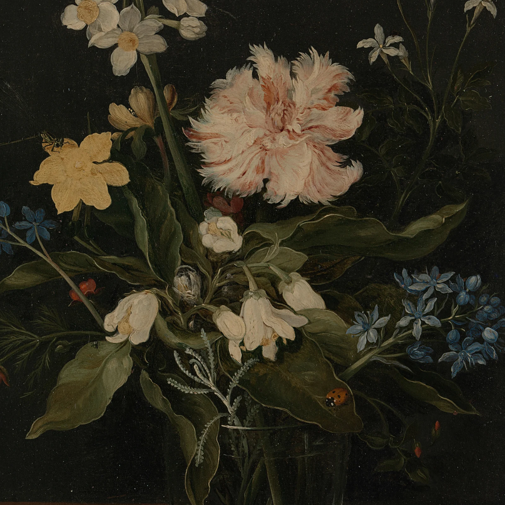
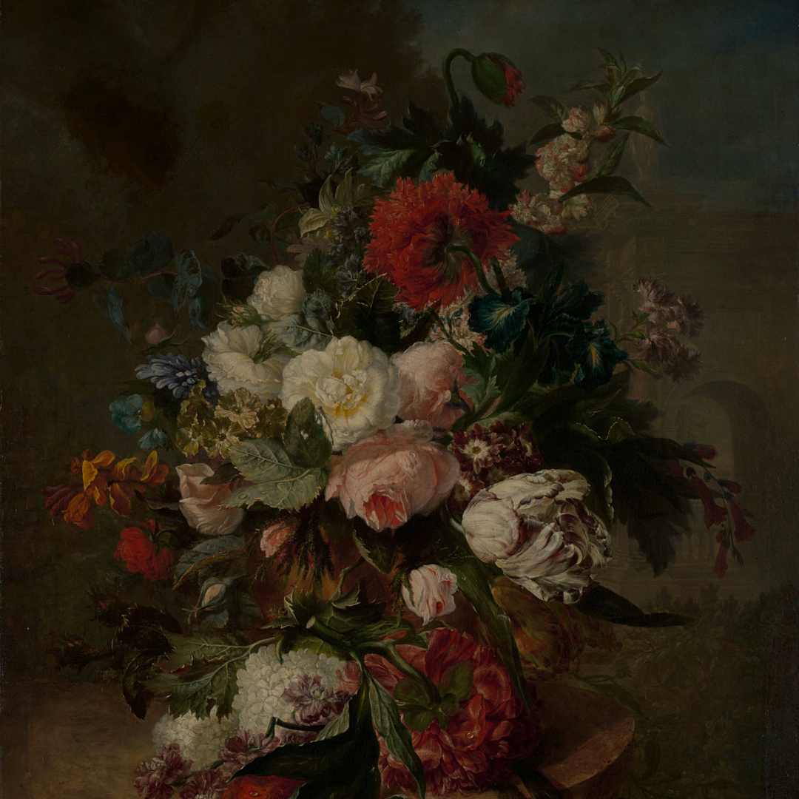
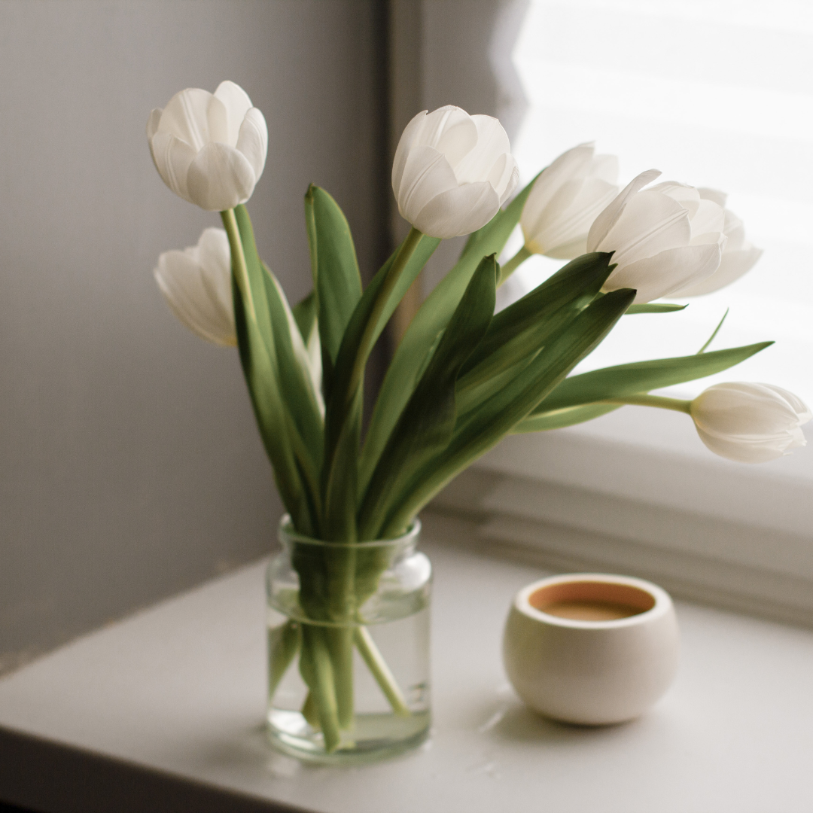

ほっとひといき
お茶の時間
わたしの
こと
about
デザインと写真で、自分の大切な人やモノ、
誰かにとっての大切な人やモノをより輝かせたい。
いつまでもわくわくを忘れないおとなでありたい。
好奇心旺盛、すなおでまじめなおとなです。

デザインしてます
design
- 
- 
- 
大好きな " ものづくり " を仕事にして10年。
ディレクションからデザイン、コーディングやWordpress構築までワンストップで担当できる
WEBサイト制作をメインに、デザインにかかわる様々なお仕事を承っております。
デザインしてます
design
- 
- 
- 
大好きな " ものづくり " を仕事にして10年。
ディレクションからデザイン、コーディングやWordpress構築までワンストップで担当できる
WEBサイト制作をメインに、デザインにかかわる様々なお仕事を承っております。
My Favorite Tea
pick up